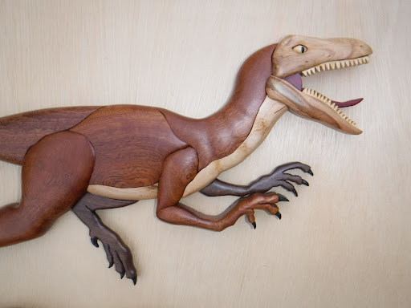
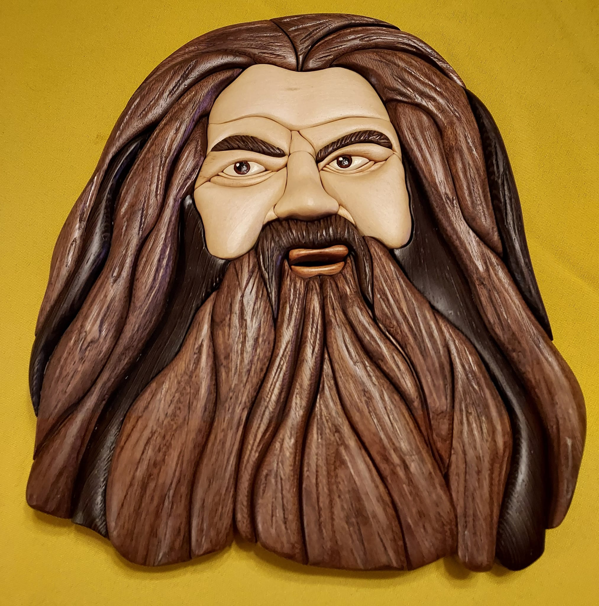
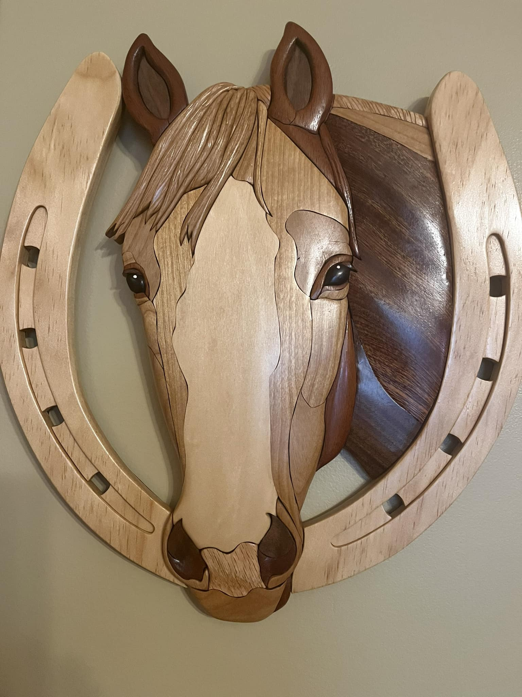
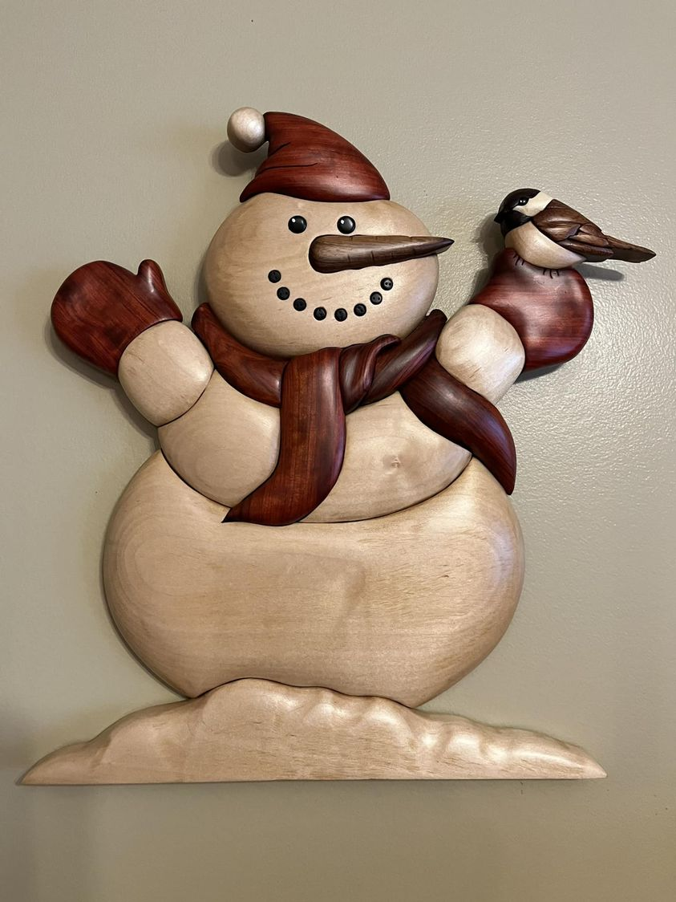
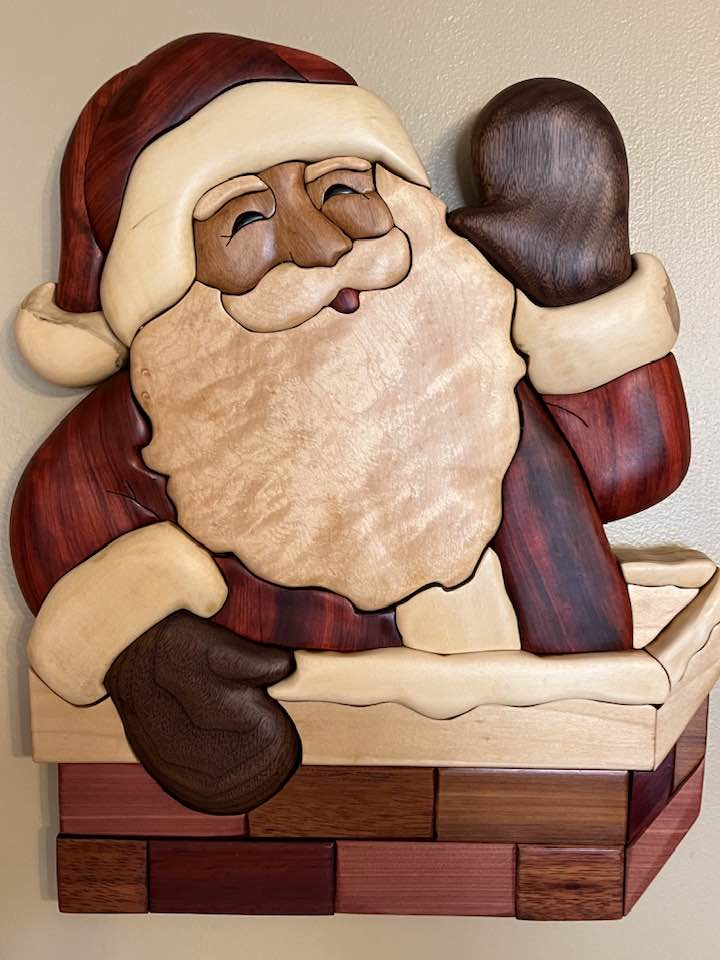
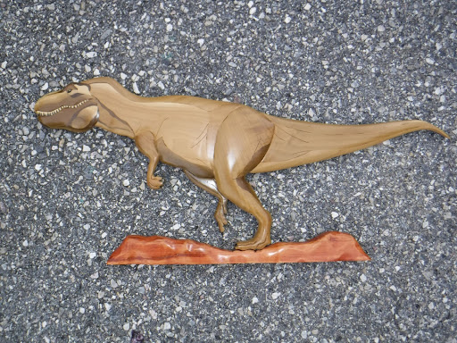

My name is Albert Bandy
Intarsia Woodworker Woodworking has always been interesting to me and after retirement from the work force I decided to make this a hobby. I invested in a scroll saw which makes intricate and detailed cuts and watched youtube videos to get creative ideas and instruction on how to use my new saw. My first projects, when completed, were 2 dimensional and looked similar to a wall plaque or a puzzle made from 1/4 inch thick wood stock. I continued researching different types of woodcraft and then I discovered Intarsia.
What is intarsia? A mosaic of contrasting and complimentary woods cut, sanded, and glued into or onto a wooden support resulting in a 3 dimensional work of art. It was popular in 15 th century Italy.
Intarsia utilizes the use of various species of wood of different grains, colors, and thicknesses resulting in a 3 dimensional work of art when completed. The process begins when a pattern of the project is cut into smaller shapes and attached to the wood and used as a guide when cutting. After all the pieces are cut they are sanded and shaped to fit the pattern and then glued to a wood backing. As a rule stains are never used because of the variety of colors available in natural wood but there are exceptions. My first project was a "T" Rex dinosaur using a pattern purchased from Judy Gale Roberts Studios and I've been working on others and designing some on my own.
     